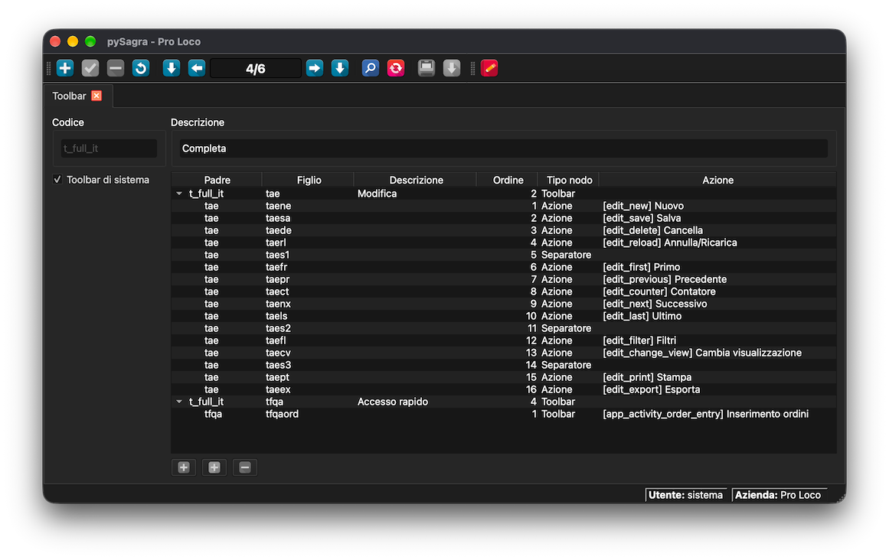

Le barre degli strumenti della finestra principale sono dei contenitori di pulsanti che permettono di richiamare velocemente alcune funzioni usate più frequentemente. Come i menu la loro struttura è organizzata come un albero ma a due livelli. A ogni utente, per ogni azienda, si assegna una toolbar.

Impostazione delle toolbar:
Come per i menu, le voci usate anche da una toolbar di sistema sono in sola lettura, e il menu contestuale dell'albero salva il layout delle colonne.
Per creare una nuova toolbar è necessario:
La struttura delle toolbar è sempre a due livelli: codice toolbar, elementi contenuti (azioni o separatori)